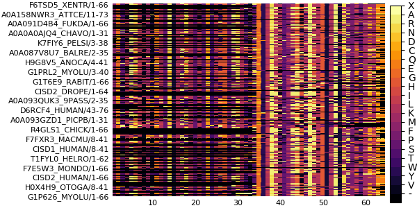
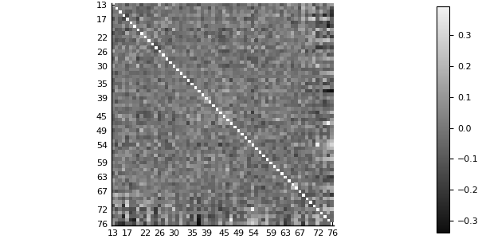

Example
In this simple demonstration, you will see how to calculate ZBLMIp (Z score of the corrected MIp using BLOSUM62 pseudo frequencies) for a Pfam MSA from the Julia REPL or using a MIToS script in the system command line.
MSA from the Julia REPL or using a MIToS script in the system command line.
MIToS in the Julia REPL
If you load the Pfam module from MIToS, you will get access to a set of functions that work with Pfam MSAs. In this case, we are going to use it for download a Stockholm MSA from the Pfam website and read it into Julia.
using MIToS.Pfam
pfam_file = downloadpfam("PF10660")
msa = read(pfam_file, Stockholm, generatemapping=true, useidcoordinates=true)AnnotatedMultipleSequenceAlignment with 549 annotations : 261×64 Named Array{MIToS.MSA.Residue,2}
Seq ╲ Col │ 10 13 14 15 16 17 … 72 73 74 75 76 77
─────────────────────────┼──────────────────────────────────────────────────
F6TSD5_XENTR/1-66 │ M E S I A R … P K K K Q Q
A0A158NWR3_ATTCE/11-73 │ M E P I A H P R - - - -
A0A091D4B4_FUKDA/1-66 │ M E S V A R P K K K Q Q
A0A0A0AJQ4_CHAVO/1-31 │ - - - - - - P K K K Q Q
K7FIY6_PELSI/3-38 │ - - - - - - P K K K Q Q
A0A087V8U7_BALRE/2-35 │ - - - - - - S K D K C -
H9G8V5_ANOCA/4-41 │ - - - - - - S K D K C -
G1PRL2_MYOLU/3-40 │ - - - - - - V K D H R N
G1T6E9_RABIT/1-66 │ M E S V A R P K K K Q Q
⋮ ⋮ ⋮ ⋮ ⋮ ⋮ ⋮ ⋱ ⋮ ⋮ ⋮ ⋮ ⋮ ⋮
A0A0J7KHJ3_LASNI/1-64 │ M E S I S H P H G R - -
H3A632_LATCH/4-64 │ - - S I S A P K K K Q Q
A0A091RJP3_9GRUI/1-31 │ - - - - - - P K K K Q Q
G1MRN1_MELGA/16-53 │ - - - - - - S K D K C -
G3H4L8_CRIGR/2-34 │ - - - - - - V K E N R -
K7FIY0_PELSI/2-67 │ M E S L A R P K K K Q Q
G3SVU7_LOXAF/8-41 │ - - - - - - V K D H R -
A0A194RSG1_PAPMA/1-63 │ M Y F V S N - - - - - -
H0VMN3_CAVPO/8-41 │ - - - - - - … V K D H R NGeneration of sequence and column mappings The keyword argument generatemapping of read allows to generate sequence and column mappings for the MSA. Column mapping is the map between of each column on the MSA object and the column number in the file. Sequence mappings will use the start and end coordinates in the sequence ids for enumerate each residue in the sequence if useidcoordinates is true.
You can plot this MSA and other MIToS’ objects using the Plots package. The installation of Plots is described in the Installation section of this site:
using Plots
pyplot() # Best backend for MSA plots
plot(msa)
The Information module of MIToS has functions to calculate measures from the Information Theory, such as Entropy and Mutual Information (MI), on a MSA. In this example, we will estimate covariation between columns of the MSA with a corrected MI that use the BLOSUM62 matrix for calculate pseudo frequencies (BLMI).
using MIToS.Information
ZBLMIp, BLMIp = BLMI(msa)
ZBLMIp # shows ZBLMIp scores62×62 Named PairwiseListMatrices.PairwiseListMatrix{Float64,false,Array{Float64,1}}
Col1 ╲ Col2 │ 13 14 … 75 76
────────────┼──────────────────────────────────────────────────────────
13 │ NaN 0.0370349 … 0.0916213 0.116179
14 │ 0.0370349 NaN 0.0585903 -0.129617
15 │ -0.0108716 -0.00452166 -0.0458224 -0.211653
16 │ 0.0350124 0.0353959 -0.0627672 -0.246564
17 │ -0.122781 0.0243272 0.136952 -0.0675807
18 │ 0.00825441 0.0419882 -0.223201 -0.0825521
19 │ -0.0202234 -0.00174809 -0.287372 -0.160813
20 │ 0.0617191 -0.0940622 0.254618 0.107992
21 │ -0.132807 -0.0423731 -0.12707 0.0184265
⋮ ⋮ ⋮ ⋱ ⋮ ⋮
68 │ 0.150368 0.21815 -0.0760483 -0.202901
69 │ 0.00870872 0.07542 0.102201 0.198563
70 │ 0.118947 0.107757 -0.0721015 -0.0359417
71 │ -0.122288 0.196582 -0.100452 -0.0398799
72 │ 0.012368 -0.122815 0.190466 0.237385
73 │ 0.114893 0.00519454 0.167814 -0.0354487
74 │ -0.0643496 -0.0242467 -0.0414402 -0.0553935
75 │ 0.0916213 0.0585903 NaN -0.0342573
76 │ 0.116179 -0.129617 … -0.0342573 NaNOnce the Plots package is installed and loaded, you can use its capabilities to visualize this results:
heatmap(ZBLMIp, yflip=true, c=:grays)
MIToS in system command line
Calculate ZBLMIp on the system shell is easy using the MIToS script called BLMI.jl. This script reads a MSA file, and writes a file with the same base name of the input but with the .BLMI.csv extension.
BLMI.jl PF14972.stockholm.gz